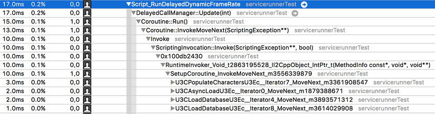

关于协程
协程（Coroutine)含义
协程不是unity的发明，“协程”是一个更广义的异步执行的理念。很多语言/框架都有对协程这个概念的实现。
首先它是一种让代码异步执行的一种机制，而且协程之间是单线程执行的，同时他的特点是能让程序员用yield主动挂起，并且显式地控制唤醒的时机。
协程解决了什么问题
协程属于异步变成的范畴，在这个领域内我们来比较一下他“竞争对手”们。
-
回调函数: 他的机制很简单，但是他的一个弊端就是把代码切分成很多个函数中，尤其是你回调里套回调，一个逻辑上的流程被切分成零碎的很多处代码，容易把人给绕晕了。
-
多线程：协程和线程一个很大的区别就是，线程是在OS层面支持的，而协程是在用户态层面实现的。线程的执行，什么时候被切出去，多个线程的执行顺序和抢占我们是无法控制的，所以需要引入一些锁的机制来保证协作运行。而协程不一样，那些东西会一口气执行完(这里指不会被其他协程打扰)，什么时候交出执行权挂起，程序员都很精准地控制。
所以总的来说，协程有两个特点：逻辑清晰，执行可控。
unity中使用协程
一提到”异步“, 在很多开发场景里想到的都是I/O等各种阻塞。
但因为游戏开发场景，unity的协程还用另一类比较常用的情形：跨越多帧，多时间点的流程写进一个函数. 举个例子就是补间动画每一帧移动一点点，或者一个ui动画先停几秒播这个再过几秒播那个...
看一下unity协程支持的yield return的迭代器，大多都是和时间，帧有有关的(比如null，waitForSeconds...)
Unity官方文档摘录
编程建议
- 如果几乎是每一帧都yield null，别写协程了，直接把代码放进update,lateupdate这种回调里。这可读性更强，因为update回调就是干这种事情的。
- 嵌套的协程，会带来更多的内存开销(下面的实现原理会说)。 但是嵌套的协程很多时候会让流程更清晰可读，所以自己权衡啦。
协程与monobehaviour
- MonoBehaviour.enabled = false时，不会停止协程.
但明确Destory(MonoBehaviour) 时会停止协程。 -
MonoBehaviour所绑定的GameObject，SetActive(false)时，也会停止协程 可以使用 MonoBehaviour.
-
可以用StopCoroutine和MonoBehaviour.StopAllCoroutines 来显式停止协程。
yield return 可以返回的类型
yield return new WaitForFixedUpdate(); //等待，直到下一个固定帧率更新函数
yield return null;//等待下一帧执行，在Update后，LateUpdate前.(注意：null、任意数字、字符串、true、false效果一样)
yield return new WaitForEndOfFrame();//等待，直到该帧结束，在渲染所有摄像机和 GUI 之后，在屏幕上显示该帧之前，LateUpdate后。
yield return new WaitForSecondsRealtime(5);//使用未缩放时间将协同程序执行暂停指定的秒数。
yield return new WaitForSeconds(5);//使用缩放时间将协程执行暂停指定的秒数。
yield return new WaitWhile(() => frame < 10);//暂停协程执行，直到提供的委托评估为 /false/。
yield return new WaitUntil(() => frame >= 10);//暂停协程执行，直到提供的委托评估为 /true/
Unity实现协程的原理
yield与IEnumerator
你在写协程的时候，会发现和其他函数有两个明显不一样的地方，其实理解这两个地方之后，大概就明白unity到底是怎么实现协程的效果了:
1. yield 关键字
2. 返回值是IEnumerator
首先明确的是，yield和IEnumerator都是C#在语言层面就支持的特性，不是unity自己搞出来的。所以详细的使用方法可以参考C#官方文档（https://docs.microsoft.com/zh-cn/dotnet/csharp/language-reference/keywords/yield)
可以在unity写个小例子来感受一下
public class YieldTest : MonoBehaviour
{
void Start()
{
var it = FuncWithYield();
it.MoveNext();
Debug.Log(it.Current);
it.MoveNext();
Debug.Log(it.Current);
it.MoveNext();
Debug.Log(it.Current);
}
public static IEnumerator<string> FuncWithYield()
{
string res = "";
res = "这是第一句话";
yield return res;
res = "这是第二句话";
yield return res;
res = "这是第三句话";
yield return res;
res = "这是第四句话";
yield return res;
}
}
输出结果为:
这个解释C#里面yield的运作机制: 可以用返回的迭代器来控制代码块的运行。
- yield函数返回值必须是IEumerator 或者IEnumerable之类的。
- 带yield函数调用后不会直接执行函数里的代码
- 用迭代器的.MoveNext()方法，让函数执行到下一个yield 语句为止
- 用迭代器的.Current 成员来取运行到当前yield所返回的值
yield在本质上实现一个了不起的效果: 它支持将一个函数用yield切分比函数粒度更小的"代码块"，并且让用户来控制(通过movenext)每个代码块的执行时机。
即yield上面的代码和yield下面的代码，是可以在不同时候执行了，这不就是异步了吗？
unity为了实现协程在干的事情其实就是支持了一堆yield return 的返回值， 再写一个调度器，根据返回值来按时候唤醒（调用.MoveNext()）。 比如你yield return new WaitForSeconds(1), 在返回后调度器就每一帧来看一下，这个函数离上次yield的时候有1秒了没，如果到1秒了，就调用迭代器的.MoveNext()
Unity cotoutine的实现细节
前面说了,unity实际上在做的，就是写了个协程的调度系统，在合适的时候唤醒挂起的函数继续执行。这里大概说一下他的运作细节。
首先你每次Monobehavipour.StartCoroutine(),其实就是在调度系统里“注册”了这个协程。注册了什么东西了？ 实际上你写了一个带yield return的函数的时候，C#编译器会这个函数生成一个class，发起一个协程的时候，就会生成一个Coroutine对象。这个实例用来保存追踪这个协程的执行状态，比如当前本地变量的值，yield的状态。因此协程是会带来一定程度的内存开销的
unity文档有个例子(实际上可以给任意协程运行时打个断点自己看):

你会发现里面有个DelayedCallManager的东西，游戏运行过程中，游戏主循环的PlayerLoop方法会在每帧的不同时间点以不同的modeMask调用DelayedCallManager.Update方法，这会遍历已经注册了的Coroutine对象,如果某个Coroutine对象的monoWait的执行条件满足，就会调用那个迭代器的MoveNext
参考
https://docs.unity3d.com/Manual/BestPracticeUnderstandingPerformanceInUnity3.html
https://sunweizhe.cn/2020/05/08/%E6%B7%B1%E5%85%A5%E5%89%96%E6%9E%90Unity%E5%8D%8F%E7%A8%8B%E7%9A%84%E5%AE%9E%E7%8E%B0%E5%8E%9F%E7%90%86/
https://zhuanlan.zhihu.com/p/147608872
https://www.zhihu.com/question/50185085/answer/183463734
写于21.8.1